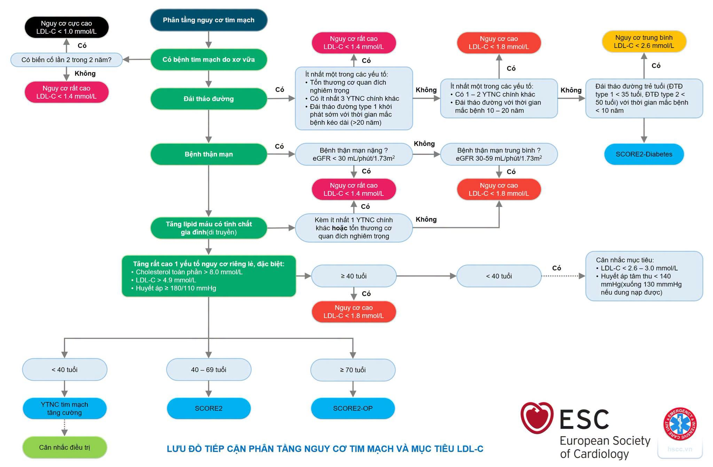

🧮 CARDIOVASCULAR EBM TOOL
ĐÁNH GIÁ MỤC TIÊU LDL-C TRONG RỐI LOẠN LIPID MÁU
Công cụ phân tầng nguy cơ tim mạch và xác định mức LDL-C đích khuyến cáo theo ESC/VNHA.
1-5
Bệnh lý nền & Nguy cơ Tim mạch đặc biệt
Nếu có bất kỳ bệnh lý nền nào dưới đây, bệnh nhân sẽ tự động thuộc nhóm nguy cơ tim mạch Cao hoặc Rất cao (không cần tính SCORE2).
6
Đánh giá theo Thang điểm SCORE2 / SCORE2-OP
Áp dụng cho bệnh nhân không có các bệnh lý cụ thể ở Bước 1 - Bước 5 trên đây để ước lượng nguy cơ biến cố tim mạch xơ vữa 10 năm.
tuổi
mmHg
Đơn vị Lipid:
mL/phút
7
So sánh & Đánh giá trị số LDL-c thực tế
Nhập chỉ số LDL-C hiện tại của bệnh nhân (và chỉ số nền trước điều trị nếu có) để tự động đánh giá mức độ đạt mục tiêu điều trị.
mmol/L
mmol/L
Sơ đồ thuật toán phân tầng & Mục tiêu LDL-c (Khuyến cáo ESC)

PHÂN TẦNG NGUY CƠ TIM MẠCH
CHƯA ĐỦ THÔNG TIN
Nhập thông tin bệnh nhân để bắt đầu đánh giá.
MỤC TIÊU LDL-C KHUYẾN CÁO
--
Vui lòng hoàn thành dữ liệu
Hướng dẫn can thiệp lâm sàng:
- Điền đầy đủ các bước bên trái để nhận phân tầng nguy cơ và đích điều trị khuyến cáo.